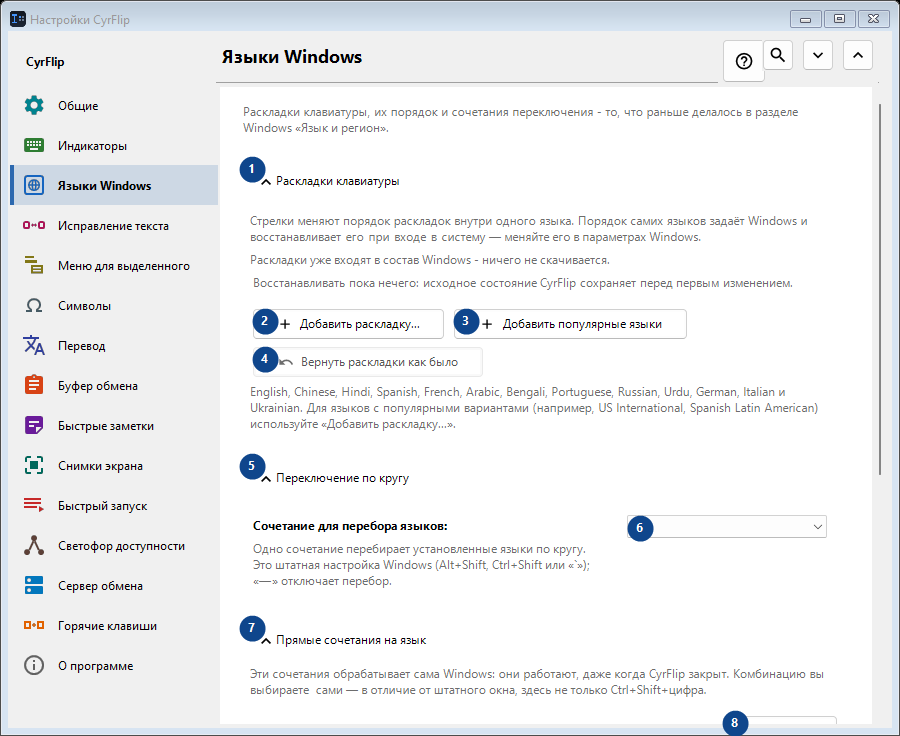
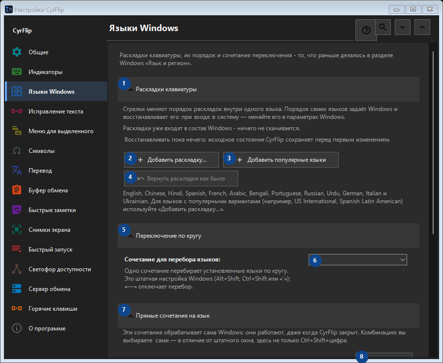

Языки Windows
Для чего это окно
Раскладки клавиатуры, их порядок и сочетания переключения - то, что раньше делалось в разделе Windows «Язык и регион».


Порядок действий
Настройки применяются сразу. Обязательного порядка нет; используйте группы ниже.
Элементы
1. Раскладки клавиатуры
Используйте команду, когда нужно указанное действие. Прочитайте запрос подтверждения перед согласием.
Ваши сочетания клавиш2. Добавить раскладку...
Используйте команду, когда нужно указанное действие. Прочитайте запрос подтверждения перед согласием.
Ваши сочетания клавиш3. Добавить популярные языки
Используйте команду, когда нужно указанное действие. Прочитайте запрос подтверждения перед согласием.
Ваши сочетания клавиш4. Вернуть раскладки как было
Восстанавливать пока нечего: исходное состояние CyrFlip сохраняет перед первым изменением. Элемент сейчас недоступен. Сначала включите функцию или выберите запись.
Ваши сочетания клавиш5. Переключение по кругу
Используйте команду, когда нужно указанное действие. Прочитайте запрос подтверждения перед согласием.
Ваши сочетания клавиш6. Сочетание для перебора языков
Выберите или введите значение для соседней подписи. Проверьте его перед продолжением.
Ваши сочетания клавиш7. Прямые сочетания на язык
Используйте команду, когда нужно указанное действие. Прочитайте запрос подтверждения перед согласием.
Ваши сочетания клавиш8. Задать... - English (United States) - US
Используйте команду, когда нужно указанное действие. Прочитайте запрос подтверждения перед согласием.
Ваши сочетания клавиш9. Очистить - English (United States) - US
Используйте команду, когда нужно указанное действие. Прочитайте запрос подтверждения перед согласием. Элемент сейчас недоступен. Сначала включите функцию или выберите запись.
Ваши сочетания клавиш10. Задать... - русский (Россия) - Russian
Используйте команду, когда нужно указанное действие. Прочитайте запрос подтверждения перед согласием.
Ваши сочетания клавиш11. Очистить - русский (Россия) - Russian
Используйте команду, когда нужно указанное действие. Прочитайте запрос подтверждения перед согласием. Элемент сейчас недоступен. Сначала включите функцию или выберите запись.
Ваши сочетания клавиш12. Вернуть хоткеи как было
Восстанавливать пока нечего: исходное состояние CyrFlip сохраняет перед первым изменением. Элемент сейчас недоступен. Сначала включите функцию или выберите запись.
Ваши сочетания клавиш13. Настройки Windows
Используйте команду, когда нужно указанное действие. Прочитайте запрос подтверждения перед согласием.
Ваши сочетания клавиш14. Открыть настройки Windows
Открывает настройки Windows, где устанавливается язык интерфейса (перевод самой Windows).
Ваши сочетания клавиш